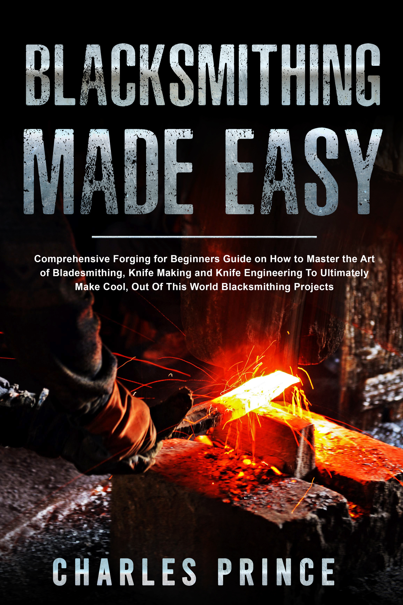
全面的锻造入门指南
教你掌握刀剑锻造艺术、
刀具制作和刀具
工程，最终打造
酷炫、超凡脱俗的
铁匠项目
Charles Prince 著
你知道刀具起源于何处吗？你是否也知道在2000多年前的石器时代，原始人类将石头塑造成用于切割和挖掘的工具？
虽然你可能对过去的刀具制作文化不太了解，但刀具是为数不多的未被其他技术先进的工具所取代的古代工具之一，而大多数其他工具都已被技术先进的型号所替代。
刀具作为一种用于执行多种任务的简单刀刃，一直保持着其实用性。这种古老而基本的工具在厨房和各种其他工作空间中仍然有用。你可以随身携带，它可能会在不愉快的情况下救你一命，特别是如果你喜欢户外冒险的话。
你想学习如何制作刀具吗？刀具让你着迷，你想更进一步制作不同类型的刀具吗？如果是这样，你正在阅读正确的书。
本指南将讨论作为初学者制作刀具所需的铁匠工具、策略和想法，包括如何设置你的工作室空间和设计不同的刀具样式。
这本综合指南不仅会教你如何制作刀具，还会激发你创作许多其他顶级铁匠项目。在掌握了从本电子书中学到的技能后，你可能最终会发现想要将你的爱好变成一个赚钱的项目。
让我们开始吧，这样你就可以了解更多关于刀具制作的知识，并成为一名铁匠大师。
附言： 我希望得到你的反馈。如果你喜欢这本书，请在亚马逊上留下评论。
请访问以下页面在亚马逊上为本书留下评论：
引言
锻造一把六英寸生存刀
简易J形挂钩
冲头(Punch)
拨火棒(Fire Poker)
开瓶器
装饰心形
叶形钥匙链
圆头锤
餐铃
钳子(Tongs)
木栓头(Loggerhead)
环形开启器
香草切碎器
蛋勺和长柄勺
殖民地锅铲
肉串叉
心形装饰碗
抽屉拉手
结论
在石器时代，人类使用石制工具来完成各种任务，如挖掘和切割。
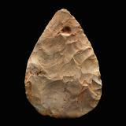
欧洲早期石器时代的手斧石器工具
早期人类使用锤石敲击或削掉圆形鹅卵石或大片薄片来制作手斧等石器工具。在金属加工时代之前，这是世界许多地区（包括欧洲、北美和印度）的通用技术。
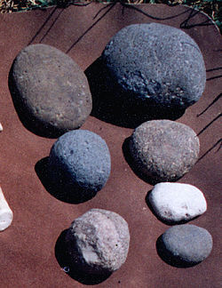
不同类型的锤石
将石头塑造成切割工具需要高超的技能和格外小心，因为制作它们也很容易毁坏这些工具。石器工具的主要缺点是它们不能持久使用，需要频繁塑形和雕刻才能正常工作。
大约在公元前1200年，人类发现了冶炼青铜制作工具的技艺。当人类创新出能够承受足够高温度来锻造铁器的冶炼炉时，这项技术进一步发展。
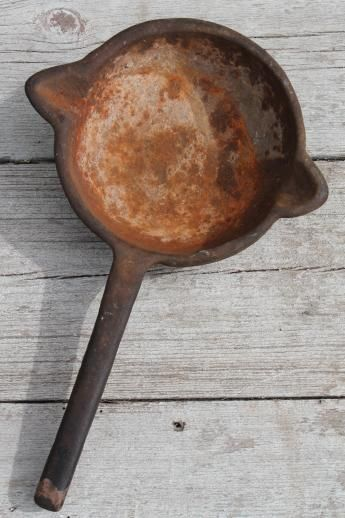
古董铅熔化锅
冶炼过程涉及在氧化剂（如空气）存在的情况下将金属加热到熔点以上，从矿石中提取金属。这一发现以及铁矿石的易获得性，改变了世界许多地区不同文化制作实用工具的方式。
人类随后制作了新的工具，包括用于开垦农业用地的金属斧头和用作战争武器的剑。
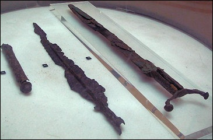
公元前7世纪意大利铁剑
铁匠技艺在世界各地以不同方式继续发展。铁砧(Anvil)是铁匠技艺中使用的主要工具，是这一行业如何发展的一个很好的例子。铁砧是一种金属加工工具，由大块金属制成，顶面平坦，在其上敲击、成型和塑造其他物体。
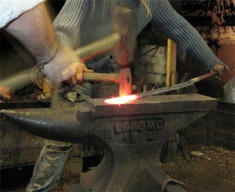
铁砧
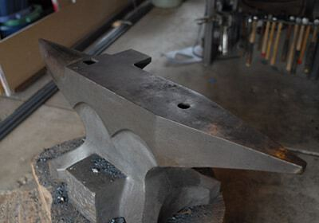
伦敦式样铁砧
最早的铁砧来自原始物品，主要是石头，通常是一块岩石板。铁砧后来演变为金属制品，由青铜制成，随后是锻铁，最后是钢。钢是当今制造铁砧最受欢迎的金属。几个世纪以来，铁砧的形状从简单的平板演变为今天被称为”伦敦样式”的铁砧，这种样式在19世纪开始流行。
虽然铁砧的尺寸和长度在世界不同地区随时间而变化，但铁砧的标准设计包括砧角(horn)、砧面(face)、台阶(step)、冲孔(pritchel hole)和方孔(hardy hole)。
几个世纪以来，熔炉(forge)也得到了显著改进。早期的熔炉只是一个用木炭燃烧的火坑，通过一对用皮革和木材制成的风箱(bellows)鼓风，将空气吹入火中以提高温度，使其足以熔化铁。
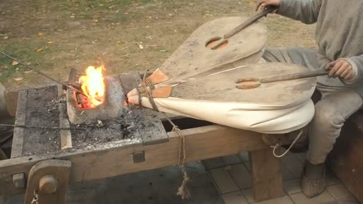
随着时间的推移，这种类型的熔炉逐渐抬高离开地面。煤最终成为熔炉中最常用的燃料形式，并连接到鼓风管。
气体和乙炔气体。电熔炉是最新的创新之一：
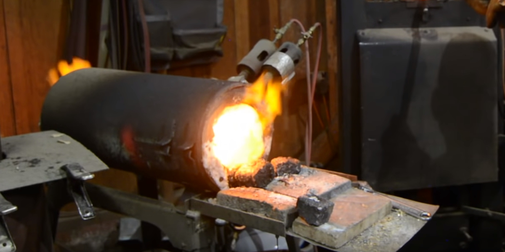
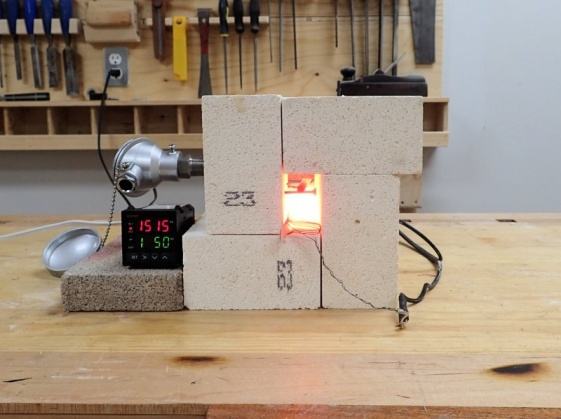
[迷你电熔炉]
历史上，铁匠使用锻铁(wrought iron)，这是一种纯铁形式，添加的碳含量极少。然而，今天很难找到纯锻铁。因此，铁匠使用一种称为软钢(mild steel)的铁。结果，“铁”这个术语被用于替代纯锻铁的软钢。
作为锻造初学者，理解以下基本事实非常重要：由于锻铁稀缺，你可以使用各种类型的钢材进行锻造，包括碳钢、合金钢和工具钢等。
在简要了解了锻造如何演变之后，让我们讨论如何设置你的锻造工作间：
既然你已经决定成为一名铁匠，你需要多大的工作间空间，设置它需要多少成本？
你应该仔细回答这些问题，以便你的锻造工作空间既不太大也不太小。你的预算是决定你创建的工作空间类型和大小的最重要因素。
对于初学者来说，不超过100平方英尺的空间最为理想。即使你能负担得起更大的工作空间，也要坚持推荐的平方英尺。遵循这一建议能让你更好地培养技能，成为一名更成功的铁匠。小型工作空间提供了一个学习曲线，在这里你会更加有效和高效。
你的工具放置系统在很大程度上决定了你的工作速度和技能学习速度。大型工作空间会让你把工具散落在整个工作间，降低你快速、有效和高效工作的能力。
迟早，随着你继续学习新手艺，你会发现钢材离开熔炉后可工作的时间非常少。在最短时间内拿起你的钳子(tongs)、锤子并到达铁砧极其重要。
作为初学者，让你的铁砧距离熔炉两步之遥。按照使用顺序将工具放置在附近。例如，将钳子放在熔炉旁边，这样当你要从熔炉中取出一块热钢时就很容易拿到。
此外，为了快速抓取，将锤子放在铁砧上或旁边。通过正确设置工具，你会在熔炉上花费更少的时间，从而更高效地生产高质量的作品。
这个行业的初学者应该避免使用为更有经验的铁匠设计的工具。这些工具只会增加你的错误，而这些错误在大多数情况下是不可避免的。例如，熟练的铁匠知道并理解如何使用高端液压机，这种设备实际上取代了肌肉功能并提高了工作效率。对于试图在没有所需经验的情况下使用此类设备的初学者来说，它会妨碍技能发展。在没有动力压力机或锤子的情况下制作钢材，能让学习者更好地理解钢材锻造过程。
新手铁匠将通过了解在金属工件上工作时失败如何以及为何发生来学习更多。在没有经历任何失败的情况下获得所有答案，不会让你具备成为成功铁匠所需的知识。在较小的空间内使用基本工具而不是高端设备工作，会迫使你发挥创造力，提高你的技能。
既然我们在谈论工具：
在设置锻造工作空间之前，你不必获得所有工具和材料。你只需要基本工具，包括以下内容：
作为铁匠，有必要在铁砧上工作吗？我不能在木工作台上敲打钢材吗？作为初学者铁匠，你可能会问这样的问题。
事实上，当你锤打钢材时，你需要一个稳定的表面来工作。你可以使用稳定的铁或钢制工作台。然而，对于大多数铁匠来说，砧座是一种必需且强烈推荐的工具，它有助于产生出色的效果。它是锻造行业中使用的主要工具。
砧座是一块钢或铁块，具有坚硬、平坦和光滑的表面。这个表面是你敲打金属片并将其塑造成所需形状的地方。砧座可能非常昂贵；因此，初学者应该选择二手的、更便宜的砧座。然而，最关键的目标是在开始你的锻造之旅时获得一个优质的砧座。
你可以从eBay、Amazon或Craigslist等网站购买二手和新砧座。按照设计，砧座可以使用很长时间，许多铁匠可能一生只使用一个。如果你能负担得起，新砧座总是比二手砧座更好的选择，除非你非常想要更传统的外观。
这个被称为砧座的迷人物品的创造者们在数百年的使用中赋予了它明确的功能。砧座有不同的部分，每个部分都有特定的用途，如下所示：
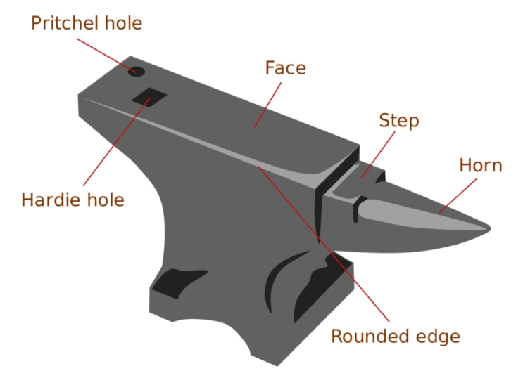
1: 砧面(Face)
砧面是砧座最大的部分。它是顶部细长的平坦部分，这是用于放置准备敲打的热金属的平台。按照设计，砧面可以承受锻造中常见的重锤敲打。
2: 台阶(Step)
台阶是紧邻砧角下方的区域。台阶的边缘有助于在锤打时切割金属片。这个部分在频繁使用时容易损坏，这就是为什么用于切割的工具最适合使用这个部分。
3: 砧角(Horn)
砧角是砧座一侧突出的玉米形状部分。它有助于将金属塑造成弯曲或圆形的形状，通过将热加工的金属放在这个部分上，然后将其锤打成所需的形状来完成。这个部分有时比砧面强度较低，因为它的主要用途是塑形和锤打。
4: 圆孔(Pritchel Hole)
砧座上有两个孔；较小的那个称为圆孔。这个孔的目的是在热金属片上打孔，通过将凿子或任何其他合适的工具放入孔中，从顶部锤打金属来完成打孔。
5: 方孔(Hardy Hole)
这个孔更大且呈矩形，其主要用途是固定各种工具，如凿子和型锻模(swages)——型锻模有助于塑造金属。这个方孔还直接帮助弯曲或打孔。
砧座根据制造商或品牌具有不同的特性。因此，了解在砧座中寻找什么很重要，包括：
1: 重量和尺寸
作为初学者铁匠，你需要问自己将如何使用砧座——你对它有什么用途？
你打算锻造刀具和刀片产品吗？你计划在未来从刀片项目发展到更大的项目吗？这些考虑将决定你应该获得的砧座的重量和尺寸。
最适合初学者的砧座是小巧轻便的，因为它在你的工作室中占用的空间较少。
2: 材料
砧座制造商使用不同的材料，如钢或铸铁。钢通常更受欢迎，因为铁可能很脆。
此外，铁砧在用锤子敲击时有相当多的回弹。钢在锤子敲击时回弹较少。大多数砧座是钢板，这意味着在购买时你有各种钢砧可供选择。
你也可以找到由石头或青铜制成的特殊砧座，但它们不容易获得——而且对钱包也不友好。
新铁匠需要更简单的砧座，而不是特殊的或由石头或青铜制成的砧座。随着你在这个行业中的成熟，你可以尝试更复杂的设计。
3: 成本
在考虑购买哪个砧座时，成本是一个关键因素。大多数砧座并不像你想象的那么昂贵，尽管有一些昂贵的。
砧座的成本也可能取决于用于制造它的材料。较小的砧座每磅可能花费3到4美元。较大的砧座每磅可能花费8美元或更多。
一个50磅的砧座将花费你100到150美元，而一个更大的100磅砧座可能花费你大约500美元或更多。价格在200到300美元之间的砧座对新铁匠来说最理想。
初学者铁匠需要了解和理解不同类型的砧座。下面讨论了你可以在市场上找到的几种砧座示例：
1: 铸铁砧座
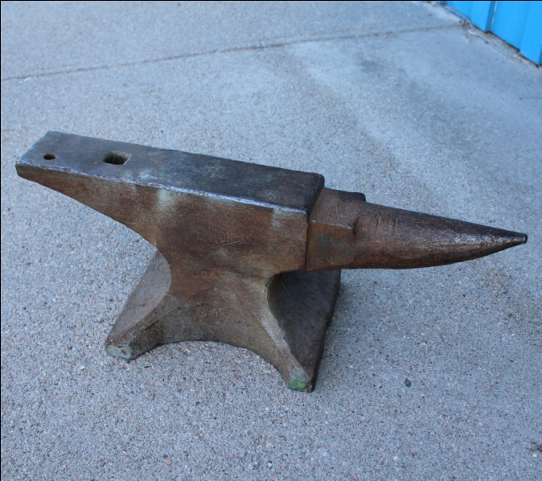
120磅铸铁砧座
铸铁砧座是一种更传统的工具，仍然被熟练的铁匠使用和尊重。它们比大多数砧座便宜得多，在当前市场上，它们不如钢砧座多。
顾名思义，制造商用含有相当多碳的合金制造铸铁砧座——与普通铁相比。
铸铁砧座的一个缺点是它可能比大多数其他类型的砧座更脆，因为它们在持续锤打下容易碎裂。虽然铸铁砧座便宜得多，仍然可以完成工作，但许多铁匠现在认为它的质量低于最新版本的砧座。
2: 蹄铁匠砧座(Farrier Anvils)
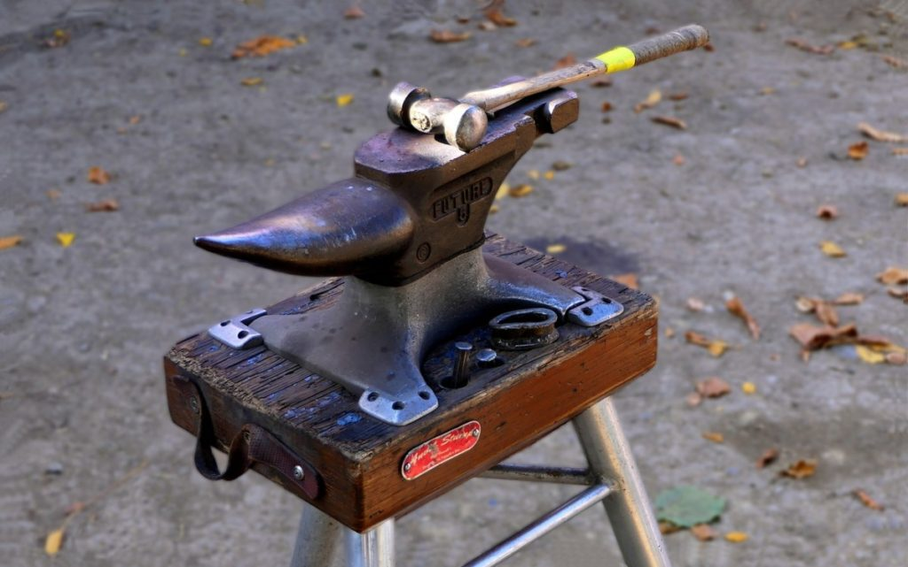
蹄铁匠砧座
像铸铁砧座一样，蹄铁匠砧座是另一种传统砧座，主要在有马的农场中找到，因为农场主用它来弯曲马蹄铁的金属。
马蹄铁匠砧（farrier anvil）看起来和普通砧板很像，但形状稍有不同。它的重量分布与普通砧板不同。它有一个更大的砧角和一个小得多的砧面，因为这些砧板部件有助于制作马蹄铁。
虽然由硬度更高的铁制成，但马蹄铁匠砧重量较轻，之所以这样设计是因为制作马蹄铁的铁匠们需要带着砧板从一个农场转移到另一个农场，因为他们需要锻造或调整马蹄铁。
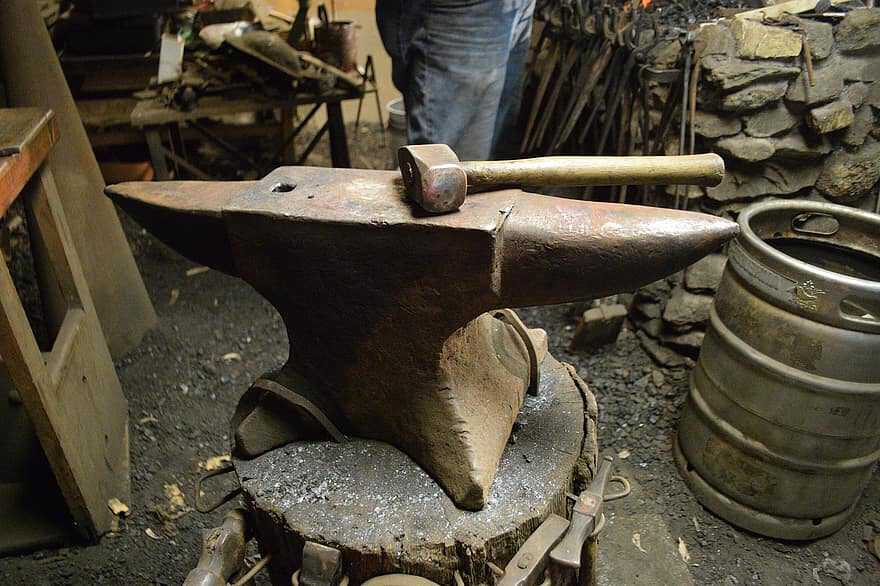
锻造砧已成为现代铁匠中最受欢迎的砧板。与用途更专业化的马蹄铁匠砧和铸铁砧不同，锻造砧可以处理更重的锻造铁匠项目。
这种类型砧板的砧面比铸铁砧和马蹄铁匠砧大，为锤击工作金属提供了更多空间。它还有一个相当大的砧角。
除了前两种砧板外，锻造砧是由钢制成的，这意味着它们可以承受锤击并且不容易崩裂。这就是为什么它们适合刚入行的铁匠，因为砧板被锤子击中时反弹较少。反弹少得多，你就能够锤击更多次而不会让你的手臂、手腕和手很快感到疲劳。
锻造砧比铸铁砧或马蹄铁匠砧重得多，重量在150到200磅之间。
推荐给初学者的砧板 你可能会选择铸铁砧，因为它比其他砧板便宜得多。然而，锻造砧最推荐给锻造铁匠初学者，因为它们的设计意味着它们可以承受锤击带来的大量力量和压力。
如果你打算长期从事这一行业，那么锻造砧比铸铁砧更耐用。铸铁砧会随着时间推移而老化，因为它在频繁的锤击后会慢慢崩裂。
为初学者强烈推荐的砧板之一是Cliff Carroll 35磅砧板。这款砧板非常适合初学者，因为它轻便、便宜、简单，而且易于使用和操作。
这款砧板重35磅，是当今市场上便宜得多的砧板。它只需200美元，与市场上的其他产品相比很便宜。你可以从北美一家备受推荐的铁匠店Centaur Forge购买。

Cliff-Carroll-35磅砧板
我们有各种各样的锻造铁匠锤子，它们都有不同的用途。选择锤子时需要考虑许多因素，特别是对于初学者。
例如，你应该考虑你的技能水平以及使用锤子的目的，无论是制作刀片还是一般的锻造铁匠工作。
选择正确的锤子，特别是对于初学者来说，通常是一项艰巨的任务，更重要的是，选择错误的样式、类型或重量会阻碍你的技能进步和工作成果。
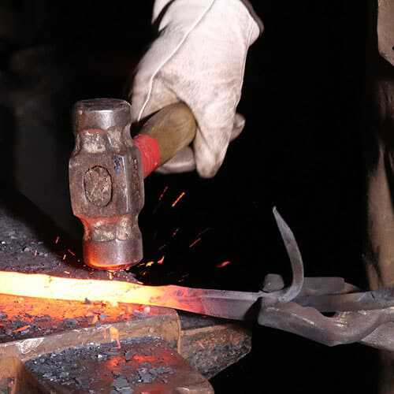
锻造铁匠锤子
选择锤子时要考虑的因素
以下是选择锻造铁匠锤子时应考虑的一些重要事项：
锻造铁匠锤子有不同的类型和样式，但一般来说，大多数锤子有两端，可以是相同或不同的形状。

不同样式、锤头和图案的锤子
我们通常称这些端部为锤面。具有不同图案锤面（平面或曲面）的锤子会直接影响最终金属件的形状。可供铁匠使用的锤子种类根据其核心设计和功能而有所不同。有许多类型的锤子，包括球头锤（ball peen）、大锤（sled hammer）、横头锤（cross peen）等。
锤子可以有相似的设计，但仍然有不易察觉的差异。这些微小差异通常与它们的整体样式有关，这表明了原产国。例如，我们有瑞典样式，如瑞典横头锤（Swedish cross peen hammer），或德国样式，称为德国式横头锤（German-Style Cross Pein hammer）。一些样式包括瑞典、日本、法国和新英格兰图案。
虽然它们看起来相似，但锤子形状和形式上的微小差异可以完全改变其功能。
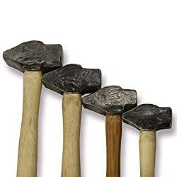
不同样式的瑞典横头锻造铁匠锤子
锤子的易用性是初学者铁匠在决定购买什么锤子时应考虑的一个重要因素。锤子的重量可以使其易于使用或不易使用，这取决于你的技能或力量。
较轻的锤子是理想的，也推荐给新手铁匠，因为它可以帮助你磨练锤击技能，而不受工具重量的限制。一般来说，为特定目的选择锤子比其重量更重要。
用于制造锤子的样式和材料决定了它的成本。高质量、耐用的锤子比低质量的更贵。作为初学者，你可以选择购买二手锤子，除了价格实惠外，还很耐用。
虽然塑料和玻璃纤维手柄用起来很舒适,但在处理高温金属件时,木质手柄是最佳选择。由于靠近热源,玻璃纤维和塑料手柄会随时间变形。
现在你已经了解了选择锤子时需要考虑的不同因素,哪一种最适合初学者呢?
以下是两种适合初学锻造者入门的锤子:
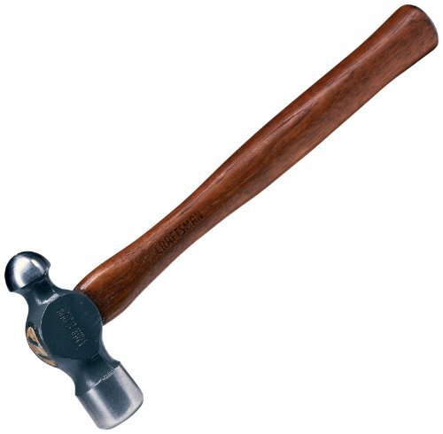
[锻造圆头锤]
圆头锤——也称为锤击锤(peening hammer)——有两个不同的锤面:一个是圆形的,称为圆头(peen),另一个是平面。它看起来像家用锤子,因为其中一面是平的。
锤击(Peening)是通过反复锤打使金属获得形状和轮廓的过程。锤头由高强度金属制成,材质为高碳钢,手柄则是木质材料。
这种锤子非常适合制作刀具和剑,因为它可以使用平面轻松抚平凹痕。它的重量较轻,范围在1到3磅之间。
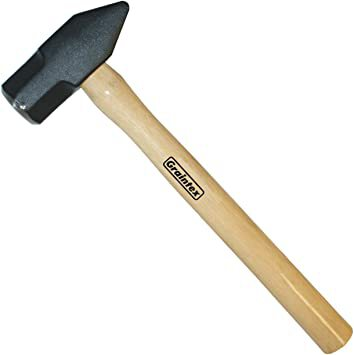
[锻造横头锤]
横头锤是锻造工匠的热门选择,因为它用途广泛。锤头的一端是平面,另一端是狭窄的楔形面,称为横头(cross peen)。
由于它是一种多功能锤,这种锤子是初学者的绝佳选择。平行的横头可以让你锤打小物件而不会意外伤到手指。
它们有不同的样式,如法式、德式和瑞典式,为你提供多种选择。重量范围在2到3磅之间,非常适合初学者。
锻炉是金属在极高温度下加热的地方,使其更容易弯曲和塑形。
作为初学者,你可以自己制作锻炉或购买一个。锻炉有不同的尺寸和形状。主要有两种类型的锻炉,包括非固体燃料锻炉和固体燃料锻炉。锻炉使用的两种常规燃料是丙烷(propane)和煤炭,你需要决定想使用哪种燃料。
考虑购买一个容易控制的锻炉。锻炉是锻造中最昂贵的工具,价格在200到500美元之间。

[Hell’s Forge便携式丙烷锻炉 单燃烧器刀具制作和蹄铁匠锻炉]
Hell’s forge是一个很好的锻炉,可以用于较小的项目,如锻造刀具。
钳子帮助你牢固地握住工件,当你从锻炉中取出并在砧上加工时。它使你能够在锤打时将烧红的金属件固定在位。
钳子让你能够轻松、高效、准确地操纵和移动工件,同时保护手指免受锤子伤害。由于钳子有不同的样式和类型,如何选择适合你需求的呢?
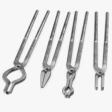
[锻造钳]
与锤子的情况一样,在购买钳子时,你需要考虑各种因素,包括:
作为初学者,在购买任何钳子之前,你需要了解钳子的不同部分。
我们把钳子的手柄称为缰绳(reins),用它们来开合钳子。钳子能够开合是因为缰绳交汇处的关节。关节有一个铆钉和铰链板将两个缰绳固定在一起。
关节前面的部分称为钳口(jaws)。钳口用来抓握和夹持高温金属件。钳口可以有不同的形状以实现不同的功能。
钳子有不同的长度,范围在15到40英寸之间。较长的钳子比较短的更重。与较短的钳子不同,长钳子也能让你与锻炉的火焰和热量保持更远的距离。
钳子的长度既可能是优势也可能是障碍。因此,你需要根据自己的专业知识、技能和将要进行的项目类型来确定最合适的长度。
对于初学者来说,18到20英寸长的钳子是完美的,例如V形螺栓钳(V-bit bolt tongs)、狼颚钳(wolf jaw tongs)和Z颚钳(Z-jaw tongs)。
很难推荐钳子的最佳重量,因为每个人都不同。有些人喜欢使用较轻的钳子,而其他人则更适合较重的钳子。
大多数初学者发现从轻型钳子开始更容易,这样可以逐渐适应锻造工作中的体力消耗和动作。
以下是两种适合初学锻造者的钳子示例:
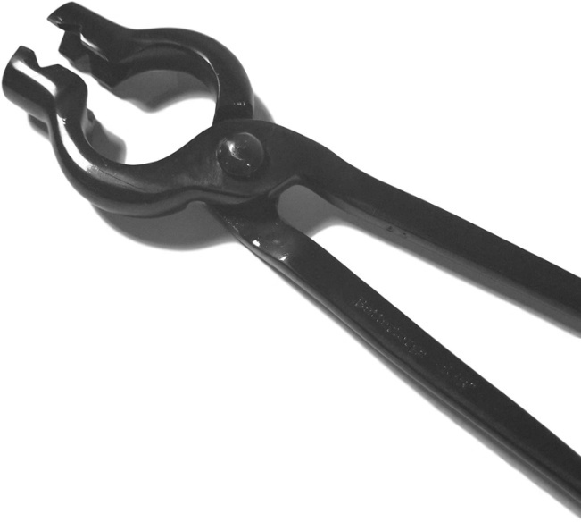
[V形螺栓钳]
V形螺栓钳在闭合位置时,靠近关节处呈圆形。钳口末端与钳子其余部分平行。每个钳口都有V形侧面。
这种钳子可以处理各种功能,但最常见的用途是制刀。V形钳口在锻造师塑形时能牢固抓握刀刃。
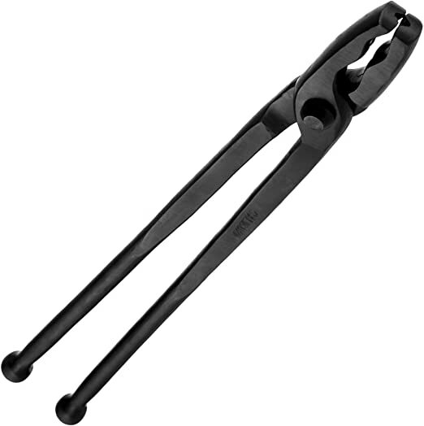
Wolf jaw tongs(狼颚钳)非常适合初学者，因为它们具有多功能性。它们重量轻，但足够坚固，可以承受锻造的力量和压力。其波浪形齿状结构提供了牢固的抓握力，可以处理不同形状和尺寸的金属件。
夹具或虎钳
虎钳或夹具是一种帮助你在金属加工中取得出色成果的工具。当它配有紧固件时效果最佳，可以让金属承受反复的锤击。它们在市场上很容易买到，而且价格实惠。
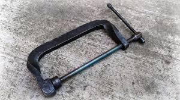
钢材
选择合适的钢材可能令人生畏，因为市场上有各种不同合金和等级的钢材，这使得决定正确的钢材变得具有挑战性。这就是为什么作为初学者，你需要熟悉锻造中使用的金属类别，以便缩小选择范围。
以下是市场上一些最常见钢材类型的分类，包括每种类型的优缺点：
碳钢是锻铁匠最常用来制作产品的钢材。这种钢的合金元素含量不超过2%。它不含任何最低规定量的元素，包括镍、铬、钛或制造商可以添加的任何其他元素来获得合金特性的钢材。
更具体地说，碳钢的最大铜含量为0.60%，最大硅含量为0.60%，最大锰含量为1.65%。
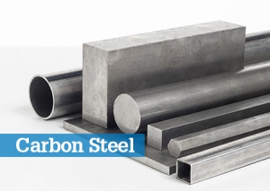
这组碳钢的碳含量为0.30%，是三种中最大的一类。它可以创建多样化的结构和形状，适合制作钩子和栏杆等物品。它们以平面支撑梁或金属板的形式出现。
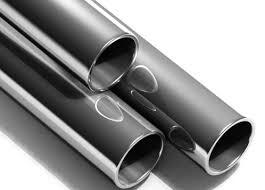
这种钢含有0.31%至0.60%的碳。较高的碳含量使这种钢比低碳钢更坚固。然而，这也使得塑形变得困难。这种金属适合制作锤子、齿轮、螺栓和螺母等物品。
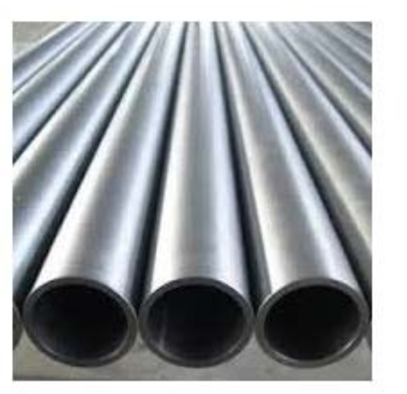
这些类型的碳含量超过0.61%。由于这种钢中碳含量相对较高，它难以塑形且易碎。由于高碳含量，它也非常坚硬，使其成为制作剑、钉子、刀具和金属切削工具的最合适金属。
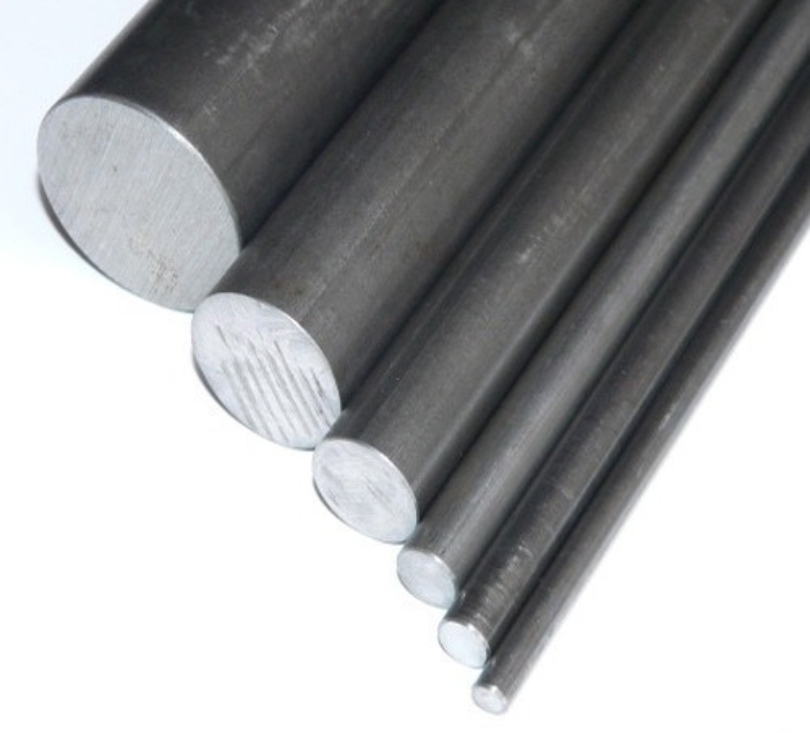
碳钢的锻造温度
施加到钢上的温度水平取决于其碳含量。碳含量越高，所需温度越低。钢的颜色会根据施加的热量而变化。碳钢需要2200华氏度至2300华氏度的温度进行锻造。
作为锻铁匠，你可以通过观察加热时钢的颜色变化来了解锻造金属的温度。然而，这只有在阴影工作区才可能实现，这使得这种方法不是100%准确，但仍然是锻造金属件温度的良好指标。
碳钢的优缺点
碳钢具有广泛的应用，并且在市场上很容易买到。回收碳钢也可以在市场上买到，但你必须小心，因为它的成分不容易确定。
制造商可以在回收钢中添加铅和锌，这可能很危险，因为它在锻造时会释放有害气体。购买回收钢时要格外谨慎，因为在大多数情况下，很难确定其成分。
以下是它的优缺点：
优点：
缺点：
合金钢
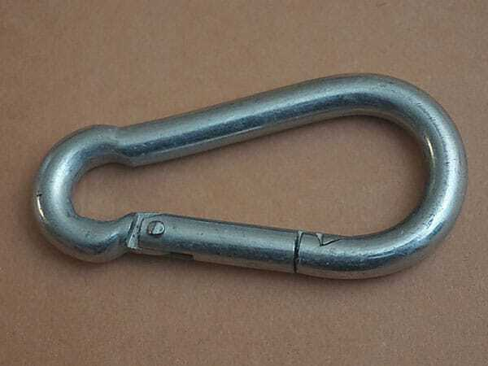
虽然钢是一种合金金属，但合金钢是一种独特的钢类型，因为它有意添加了成分来改变其性能。
这些性能包括抗性、成形性、延展性和可硬化性。用于制备合金钢的材料包括
合金钢可分为高合金钢和低合金钢。高合金钢含有超过10%的铁或碳以外的合金成分。另一方面,低合金钢的碳含量低于0.2%,其合金元素占比不到其成分的10%。
合金钢易于加工成所需形状,而且价格不贵。铬增加韧性、硬度和耐磨性,锰硬化钢的表面,提供抗冲击和抗污性,镍提供抗氧化和抗腐蚀性并增加钢的韧性和强度。
钨硬化钢材,改善其晶粒结构,并使其耐热。钒提供抗腐蚀和抗冲击性,并增加钢的强度和韧性。
合金钢的用途比碳钢多得多,因为它通常更强、更硬,具有额外的延展性和更高的耐腐蚀性,这就是航空航天和建筑行业大量使用它的原因。它的磁性特征使其成为电子产品的绝佳选择。
优点
易于加工
具有磁性
其特性(包括各种合金元素)可改进
与碳钢相比,具有更高的硬度、韧性、成型性、延展性和耐腐蚀性
缺点
比碳钢更昂贵
在高应力水平下易脆
需要热处理
可能需要特殊处理
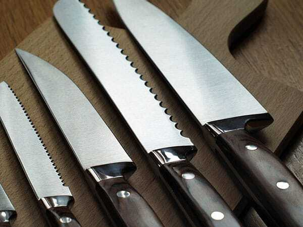
不锈钢是一种在20世纪初发现的耐腐蚀金属。不锈钢含有10%的铬,使其成为高合金钢。铬是不锈钢中的合金元素,当它与大气中的气体反应时会产生氧化铬。
氧化铬起到一种自我修复的作用,在钢的表面形成,防止任何污渍或锈蚀。这种反应使其具有光泽的外观,而不是普通碳钢的暗淡外观。由于其美观的表面处理,不锈钢是制作装饰产品的热门选择。
不锈钢有四个类别:铁素体不锈钢、奥氏体不锈钢、马氏体不锈钢和双相不锈钢。
具有磁性,铬含量高达27%。
具有高铬含量和8%的镍。主要用于制造医疗和食品行业的设备。
具有磁性,钼含量高达1%。这种不锈钢的延展性使其易于制作各种形状。主要用于制作刀片和机械零件。
双相不锈钢是奥氏体不锈钢和铁素体不锈钢的混合物。这种钢具有高钼和高铬含量,使其比奥氏体和铁素体不锈钢更坚韧、更强。
这种不锈钢主要用于制造食品加工和化学加工设备,主要是因为它能承受恶劣的环境。
不锈钢与各种物质兼容,使其成为需要更高温度的化学工艺的理想材料。根据其等级,不锈钢在华氏1700度至2100度之间可塑。
为了提高其成型性,制造商经常在不锈钢中添加镍和钼。通过锻造可以增强其机械性能,从而获得更强大、更耐用的材料。
尽管不锈钢的导热性低于碳钢,但由于其高抗氧化性和耐腐蚀性,它被广泛用于制造工业和家用电器。
制造商还用它制作厨具和餐具,包括汽车排气系统。就像碳钢一样,它在市场上很容易买到。
优点
耐氧化和腐蚀
具有高延展性
能够承受高温
具有高强度重量比
缺点
导热性低于碳钢
生产和精加工成本高
较强等级(如双相)难以锻造
难以焊接和处理

工具钢用于制作切削工具和其他金属产品。这种钢坚韧、耐磨、耐热,因为其应用要求高,由碳钢和合金钢组成。制造商经常通过添加钨、钴、钒和钼等合金元素来提高工具钢的耐用性。
工具钢有六个独特的类别：
这种工具钢是最基础的。当浸入水中时会快速硬化，这使其容易开裂和变形。它对高温的耐受性较低，在超过300华氏度的温度下容易软化。
与其他类型的钢材相比，它相对便宜，主要在销售金属的零售商或钢材供应仓库中找到。其主要用途是压花丝锥、制造餐具和手动切削工具。
这种钢是在1860年代由冶金学家罗伯特·马谢特(Robert Mushet)开发的，他想创造一种不需要用水淬火的钢材。它可以通过空气和油淬轻松硬化；这两种方式都降低了开裂的风险。
制造商通过添加少量的铬、锰、钨或钼来提高这种钢的硬度，从而提高其对高温的耐受性，增加其硬度和耐磨性。
其常规锻造温度范围从1575华氏度到2000华氏度。其主要用途是制造机械零件衬套和凸轮轴。对于铁匠爱好者来说，它最常见的用途是木工工具和刀片。
与许多其他工具钢类型一样，这种钢含有大量的锰、铬和钼，增加了其硬度和强度。然而，它与其他钢材略有不同，因为添加了硅，使材料对冲击力引起的变形具有很高的抵抗力。它们具有很强的耐磨性，使其成为制造冲头、凿子和弹簧的最佳选择。
锻造这种钢的最佳温度在1800华氏度到2000华氏度之间。锻造后，铁匠必须让钢材缓慢均匀地冷却以减少应力。正是因为这个特殊原因,用这种钢制成的物品要在炉中冷却。
这种类型的钢材起源于罗伯特·马谢特(Robert Mushet)早期开发的冷作工具钢。
在20世纪之交，伯利恒钢铁公司的冶金学家对现有的高质量钢材类型进行了实验，并将它们置于比通常更高的极高温度下。
最终结果是能够承受极高温度的钢材，后来被命名为高速工具钢。这种钢含有钼和钨，当它们结合在一起时，占总钢材的10%。
高速工具钢的主要用途是制造切削工具，如齿轮铣刀、钻头和锯片，因为它可以承受摩擦产生的热量。这一特性进一步使工具能够承受在非常高的速度下切削，这就是这种钢得名的原因。这种钢还用于制造高质量手工工具和木工车削工具。
用高速工具钢锻造物品的温度在1900华氏度到2050华氏度之间。与抗冲击工具钢一样，铁匠应该均匀缓慢地将这种钢加热到这个范围。锻造后,用这种钢制成的物品也需要逐渐冷却。
这种类型的钢材制造用于在极高温度下使用的工具。它们的主要用途是在压铸等行业，包括金属锻造和玻璃制品等应用。其碳含量较低，最高可达0.6%，但另一方面，它具有高铬、钼和钨含量，范围为6%至25%。
然而，一些热作工具钢牌号在受到水和高温作用时会开裂，特别是那些钨含量高的牌号。然而，总体而言，大多数这些钢材牌号具有出色的耐高温、耐变形、抗冲击和耐磨性。这种特殊的钢材在1700华氏度到2100华氏度之间的温度下锻造。
与水淬工具钢相比，这些钢的合金含量要高得多，增加了其淬透性和耐磨性。
从上述类型的工具钢中，你可以看到有广泛的锻造金属可供选择。
因此，作为初学者，你需要为你的特定应用选择正确类型的工具钢。在购买钢材时，要考虑成本、耐性、硬度和温度等因素。
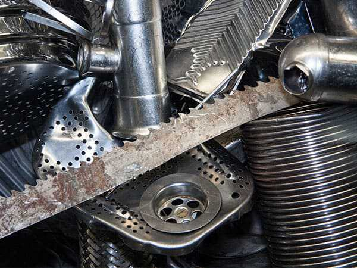
钢是一种非凡的产品，因为它很容易回收——它是世界上回收率最高的材料。钢在回收过程中不会劣化，钢回收的二氧化碳排放量比生产新钢少80%以上。
钢回收过程始于将其与其他金属分离和分类。然后进行压实，随后切碎成更容易加工的小块。这些钢块然后经过熔炼过程变成液态钢。之后，液态钢使用合适的净化方法进行精炼。精炼过程后，液态钢进入一个腔室，在那里冷却成固体。
回收钢可以制造用于各种结构和工业应用的梁和管道。
降低碳排放
节能高效
低成本
高度可持续
回收过程不会损害物理特性
生产高质量钢材取决于分类过程
分类需要格外小心
很难控制回收钢中的合金成分
无论你有哪种类型的锻炉，你都需要燃料来产生热量。燃料成本取决于你将要使用的燃料类型和所需数量。最常用的燃料是煤。
以下是铁匠锻造中使用的一些燃料的描述：
如前所述，煤炭是最常用的锻造燃料。刚点燃时会冒烟，但随着温度升高，烟雾会消散。烟煤是最常见的煤炭，价格也不贵。无烟煤是最好的煤炭。无烟煤点燃较难,但一旦点燃，燃烧温度更高、时间更长。
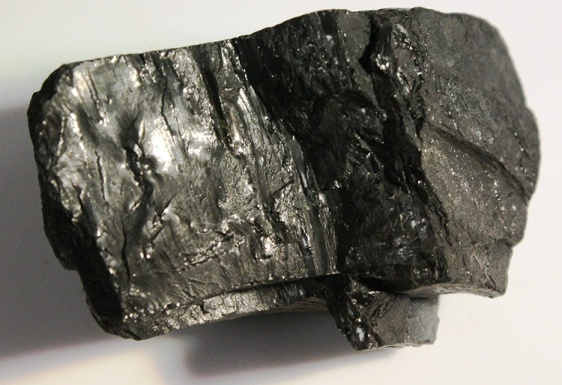
2: 木炭
木炭是你最后才应该考虑使用的燃料，因为虽然容易获得，但在大多数情况下，如果没有持续的空气流动，它无法达到软化钢铁所需的温度。你可能燃烧大量木炭却仍无法达到所需温度。如果你是锻铁新手，可以尝试使用木炭，看看它是否适合你计划的项目。
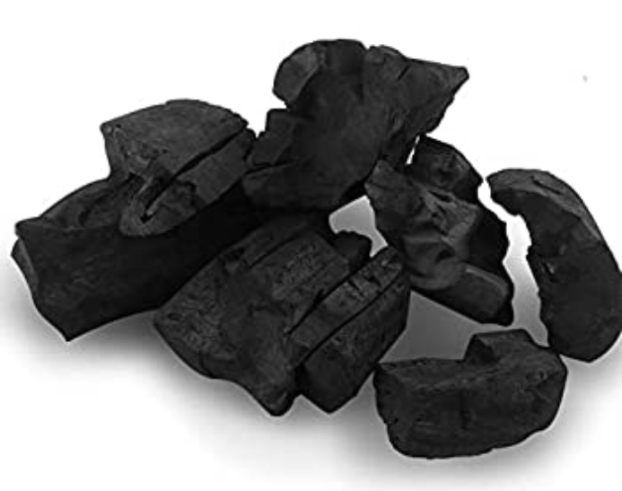
3: 丙烷
丙烷是木炭的最佳替代品。它是一种清洁燃料，燃烧温度远高于木炭和煤炭，而且便于携带。
作为初学锻铁的人，丙烷是最佳燃料选择。因此，制作或购买丙烷熔炉是最好的选择。使用熔炉可以比明火更完全、更高效地加热金属。
丙烷熔炉不会像木炭或煤炭熔炉那样冒烟，但可能会产生呼呼声。
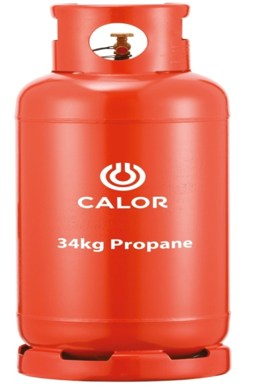
4: 电力
你可能决定制作电力熔炉，这没问题，但要记住这种熔炉涉及电压，可能非常危险。风险包括触电、火灾，如果不严格遵守安全预防措施，甚至可能导致死亡。
如果你是锻铁新手，电力不是理想的燃料来源。即使你积累了经验，除非你100%确定能安全使用市电电压，否则也不要尝试使用。
[初学者的最佳锻铁燃料选择]
现在你知道了四种燃料选项，应该选择哪一种呢？
木炭很脏，而且无法产生足够的锻造热量。
煤炭燃烧时间更长，可以产生足够的锻造热量。但是，你必须确保有可靠的供应商提供稳定的煤炭供应。煤炭也相当昂贵。
丙烷在市场上容易获得，可以产生足够的锻造热量。它也比木炭和煤炭清洁得多。
丙烷是满足你锻铁需求的最佳选择。
由于锻铁涉及高温火焰，在制作刀具和其他工具时需要高度谨慎并注意安全：
现在你已经了解并理解了所需的入门锻铁工具和规划工作室，同样重要的是了解需要采取的安全程序。
从目前获得的知识来看，很明显锻铁工作室内到处都潜伏着危险，因为你将处理有毒烟雾、火焰、飞溅的碎屑、煤尘和炽热的金属。因此，如果不采取适当的安全程序，可能会伤害自己或损坏财产。
第一项安全措施是阅读所有将用于锻铁的设备安全手册。烧伤是最大的安全隐患，可能轻微也可能严重。烧伤可能发生在皮肤上，锤击时的热火花也可能损伤眼睛。
火灾是另一个可能性，因为锻铁匠大部分时间都在与火打交道。化石燃料如煤炭和木炭在燃烧时会释放有毒的一氧化碳，如果吸入可能很危险，甚至可能导致死亡。锤子砸到自己也是另一个安全隐患。
别忘了，各种锻铁过程产生的重复噪音也可能损伤耳朵。这些噪音主要来自锤击、研磨和大功率机器。
了解到锻铁可能发生许多危险后，学习应采取哪些安全措施至关重要。
以下是你可以采取并遵循的安全措施。它们可能会挽救你或朋友的生命。
[: 小心处理工作室内的所有材料]
作为新手锻铁匠，不要假设暗色金属就是冷金属。在工作室内，要把每块金属都当作非常烫的来对待。
某些金属如钢不会发红，但温度可能足以伤害你。因此，在工作室锻造金属时要戴耐热手套。
[#: 在工作室时穿戴防护配件或装备]
不要穿任何可能被工具钩住的宽松衣服。摘下任何首饰，包括结婚戒指。把头发固定好。你最需要的一些防护装备和配件包括：
围裙
围裙有助于保护身体前部，从胸部到膝盖。使用优质皮革围裙。围裙还可以保护衣服免受污垢侵害，污垢会粘在围裙上而不是衣服上。避免穿合成纤维衣服，应穿羊毛和棉质衣服。
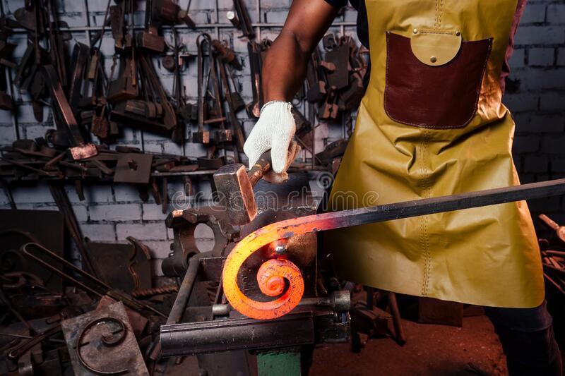
[围裙]
防护眼镜 安全眼镜是您需要的主要安全配件之一；它们可以保护您免受飞溅的金属碎片和火热火花的伤害。通过佩戴适当的眼镜来保护您的眼睛。有些是透明的,有些是深色的;无论您更喜欢哪种,都要选择一副能保护眼睛免受紫外线伤害的眼镜。
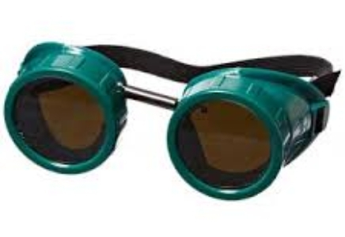
手套
您不能低估手套的价值。作为铁匠,您会接触许多高温物体,因此存在烫伤手掌的风险。您的手指也面临风险,需要保护。不要冒险用裸手去拿正在锻造的热钢:使用安全手套。
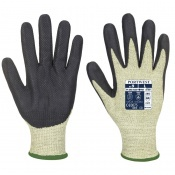
[铁匠手套]
防毒面具
在研磨、切割或打磨时,您必须保护肺部,因为粉尘对肺部有害。随着时间的推移,暴露于锻铁粉尘中会对您的呼吸系统造成不可逆转的损害。您可以戴口罩,但合适的防毒面具是更好的选择。
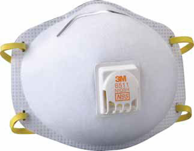
[3M颗粒物防护口罩N95 8511对各种非油性颗粒物提供至少95%的过滤]
[颗粒物]
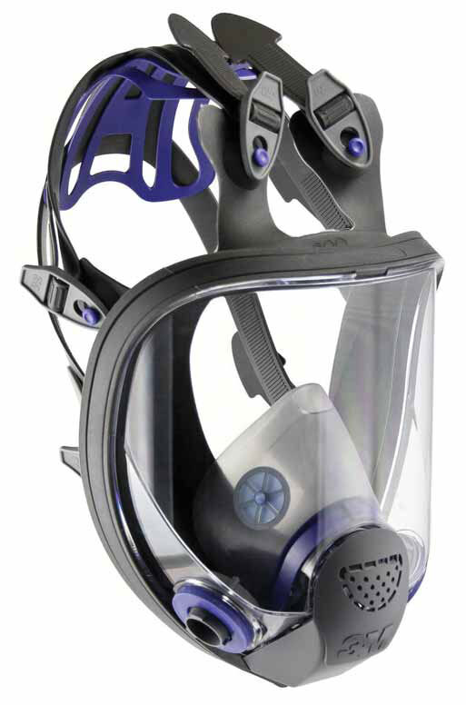
[3M Ultimate FX全面罩防毒面具非常适合有胡须的刀具制作者]
安全靴
当您在工作室时,需要穿安全靴来保护您的脚和腿。热物体可能会意外掉落到您的脚上,严重烫伤您。如果您不小心踩到热金属或尖锐物体,安全靴也可以保护您。
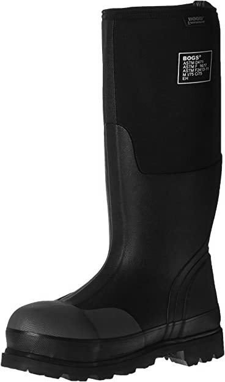
耳塞
许多铁匠忽视了噪音造成的耳朵损伤风险,主要是因为耳朵损伤不会突然发生。它会随着时间的推移而发生,有时需要数月甚至数年才会出现明显的耳朵问题。您应该认真对待这种缓慢的损伤,因为它可能是致命的。
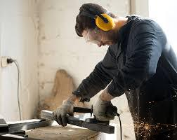
[耳朵保护]
反复挥动锤子会损害您的骨骼系统。作为初学铁匠,请确保使用正确的形式和技术来锤击金属件以避免受伤。长时间保持特定姿势会妨碍骨骼系统的运作。
与任何其他工作室一样,适当的通风在锻铁工作室中至关重要,无论您使用哪种燃料,都需要在工作室中有足够的新鲜空气。
您不想看到人们因吸入有毒烟雾(特别是来自煤炭或木炭的烟雾)或仅仅因为空气不足而晕倒或昏厥,对吧?这些烟雾还会损害您的呼吸系统。
确保您在工作室工作时处于适当的精神状态,并且身体状况良好。如果您生病、醉酒、疲倦、饥饿或感到头晕,请不要工作。在工作之间休息;这样,您将确保自己保持警觉并处于良好状态来从事铁匠工作。
即使您作为铁匠小心工作,也无法100%避免轻微伤害,如割伤、烧伤、擦伤等。因此,您应该有一个配备割伤和烧伤治疗用品的急救箱。
确保您的急救箱还有其他物品,如绷带、棉花、甲基化酒精,以及您认为需要的任何其他东西。这些将是您在受伤时的第一反应。如果伤势严重,应立即前往急诊室就诊。
除了上述安全措施外,您还需要遵守许多不同的措施。它们包括但不限于:
不要使用损坏或故障的工具,如铁砧和锤子,因为除了使您面临危险外,还会降低您的生产力。
使用正确的工具。例如,从锻炉中提起热而重的物体时使用正确的钳子。
关闭工作室时,切勿在锻炉中留下任何燃烧的火。在离开前彻底熄灭,无论您使用哪种类型的锻炉。
在使用工具和机器之前,尽可能多地了解它们。在使用任何工具之前,阅读并理解制造商的手册。
始终检查并确保锤头正确固定在手柄上,这有助于确保它不会飞出,伤害您或他人或损坏任何东西。
在干净整洁的工作室工作。避免到处都是杂物。清理地板上的所有碎片和尖锐物体。
小心任何旋转部件。
使用完工具后将其放回正确的位置。
确保您的电器设备处于良好的工作状态并始终正确连接。
引导和监督您工作室中的任何访客,以确保他们的安全。
不可能给您提供全面的安全指南,因为每个锻铁项目都是不同的。一般来说,您需要做的主要事情是确保在工作室工作时始终确保自己的安全。
您已经了解了开始锻造之旅所需的工具，现在知道如何建立工作坊，以及需要实施哪些安全规则来防止受伤和损坏。
这意味着您已经准备好开始锻造了：
您现在可以开始您的第一个项目，即锻造一把基础刀具——一把六英寸生存刀。
让我们开始吧：
您需要合适的材料来制作一把能够正常工作且不会失效的刀具。您需要使用正确类型的钢材，能够打磨出锋利的刀刃而不会断裂或变钝。
由于并非所有金属都可以用来制作刀具，最佳的钢材类型是：
工具钢(Tool steel)
碳钢(carbon steel)
不锈钢(stainless steel)
要制作厨刀或主厨刀，钢材厚度应为1/16英寸(4/64英寸或1.58毫米)。
制作这把刀需要基础设备。
您需要一个锻炉。燃气锻炉对初学者来说最好，因为它比其他锻炉更容易操作、清洁且更便宜。如前所述，价格200美元的Hell’s Forge丙烷燃烧器最适合初学者。您还需要一个铁砧(anvil)、一些钳子、一把锤子、一些砂轮片、砂纸、一套锉刀(files)以及一些零碎工具。
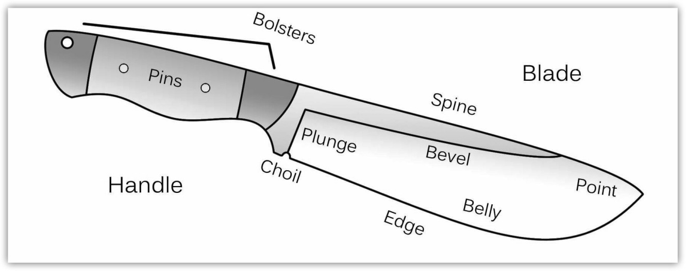
下一步是设计您的刀具。首先勾勒出您想要制作的刀具尺寸。您将要制作的刀具是一把6英寸长、直径2英寸的刀刃。无论您想要更小、更厚还是更长的刀，基本轮廓都是一样的。
一个通用的铁匠规则是，生存刀的2/3是刀刃，1/3是刀柄。对于6英寸的刀刃，刀柄要额外留出3英寸。无论何时设计，都要遵循这个准则。
您将在纸上勾勒出设计图。然后将轮廓放在钢材上，用笔在金属上标记；这将在您锤打钢材时充当粗略的蓝图。
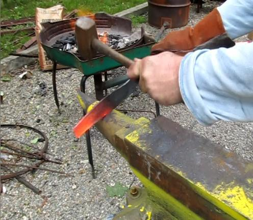
在将金属放入锻炉之前，请采取安全预防措施，佩戴护目镜、手套和其他防护装备。
在金属处于锻炉中时检查其颜色。当温度达到华氏2100度到2200度之间时，您会注意到它变成黄色。此时，拿起钳子从火焰中取出金属——它已经达到所需温度。
然后您将开始锤打金属片的侧面，这会使边缘周围的金属变厚，而中心保持不变。之后，将金属平放在铁砧上，通过锤打开始将其压平。
继续锤打您的金属，但这次要稍微偏左一点，而不是直接在铁砧的角(horn)上方。金属会慢慢开始弯曲成您想要的弧形。使用铁砧的平面将金属锤平，使用角来实现您想要的曲线。
当您注意到金属在锤打时开始折叠时，将刀刃放在铁砧上，将边缘锤回平整。需要注意的一个重要方面是，您不应该在刀尖上花费太多时间，特别是如果它是弯曲的或非常薄的。在最后的锻造阶段再处理它。
完成刀具工作时换用较小的锤子。较小的锤子会让您有更好的控制力和精确度，尤其是如果您想确保斜面(bevel)效果良好的话。您可以通过将多余的金属放在铁砧的方孔(hardy-hole)处，用工具进行热切割来去除它。

确保在开始锻造刀具时雕刻出落差护手。您可以在开始弯曲之前做这个，我们称之为半面锤打(half-face hammering)，这是通过将刀具一半放在铁砧外来完成的。
当接近您想要的形状时，通过锤打刀刃两侧来开始开刃(beveling)，以便将您要打磨的边缘变薄。以一定角度锤打以实现这一点。
当您对刀刃施加锤击时,钢材会向刀背推进。此时，确保形成一个良好的楔形，连接刀刃的切割边缘。
退火(Annealing)是软化刀具的过程，以便您可以继续使用手动工具、砂轮、砂纸、锉刀和其他工具进行加工。
将刀具加热直到变成红橙色。检查它是否粘磁铁。如果不粘，开始缓慢冷却，可以通过将其完全浸入沙子中来完成。让它冷却下来，然后在安装刀柄之前继续加工。
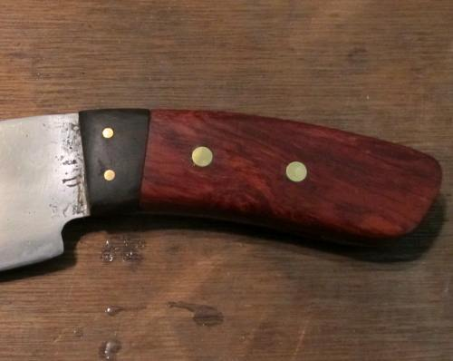
刀柄有两个不同的部分：护手(bolster)，即深色木头，和刀柄，即浅色木头。因此，刀柄有四块，每侧两块。您将用胶水将这四块固定到位，并用黄铜销钉固定。刀柄中的黄铜杆是1/8英寸，而护手是1/16英寸，如下所示。
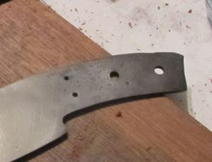
使用刀具作为模板，在大致切割成护手和刀柄近似尺寸的四块木头上钻孔。使用木钉，将这些木块临时固定在刀具上。
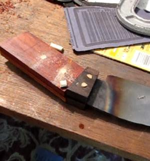
使用粗锉(rasp)、砂带机(belt sander)获得您想要的形状和尺寸，并使用砂纸获得良好的表面效果。一旦您获得了具有良好表面效果的正确形状，取下护手和刀柄部件，并将它们放在一边。
加热锻炉并将刀具放入其中。
拿另一根长金属条，放入锻炉中加热。然后准备一个桶，倒入油；任何油都可以。你可以使用植物油、机油，甚至变速箱油。取出长金属条，浸入油桶中。
这会提高油的温度，使回火和淬火效果更好。将刀加热至红橙色，注意刀刃和刀尖。用磁铁测试是否还能吸附。如果可以，将其完全浸入油中并旋转。
从油中取出后，现在可以完成刀刃的最后处理。使用金刚砂纸(Emory paper)打磨，这会让你的刀刃看起来光滑漂亮。使用金刚砂纸后，可以用抛光轮(buffing wheel)抛光。使用抛光轮时要非常小心；它可能会抓住刀并将其甩向你。
刀冷却后，用锉刀测试硬度。用锉刀轻轻划过刀面；你应该听到玻璃般的声音。锉刀应该能在刀面上滑过而不会卡住任何东西。
用砂纸或金刚砂纸清洁刀身两面，确保非常干净。现在可以开始回火了。慢慢提高刀身温度。刀背的温度应高于刀刃，可以通过观察颜色变化来实现。刀背应达到梅子色，而刀刃会呈现小麦色。
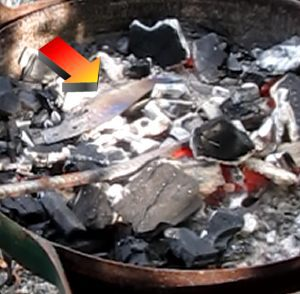
如上图所示，应将刀背放在更靠近火源的位置，刀刃远离火源。刀背会先加热，然后慢慢将热量传导到刀刃。
一旦刀背呈现梅子色，刀刃呈现小麦色时，立即浸入油中固定。用金刚砂纸清洁刀身。下一步是将刀柄安装到刀上。
用砂纸打磨刀柄内侧，即要粘到刀上的边缘。用钢锯从黄铜棒上切下销钉。切两根1/16英寸的销钉和两根1/8英寸的销钉。使用木销作为参考来确定黄铜销的长度，但要确保它们稍长一些，因为安装到刀柄后还要锉平这些销钉。
测试销钉是否适合刀和刀柄的孔。你不想在所有东西都涂满湿胶水时还要费力安装。
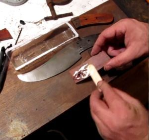
混合两部分环氧树脂胶，比如五分钟大猩猩胶(Gorilla glue)。不过，你也可以使用二十分钟的环氧树脂胶，这样有更多时间正确安装刀。
将胶水涂在刀柄的四块上。将刀柄片固定到刀上并插入销钉，然后用小锤子轻敲销钉。夹紧刀，等待90分钟干燥后再处理，24小时完全固化。避免夹在销钉上。
胶水凝固后，可以用丙酮清理。用锉刀将黄铜销钉锉平。锉平刀柄使其表面光滑并抛光——可以涂几层桐油(Tung oil)。
磨锋利刀刃，你的刀就可以使用了。
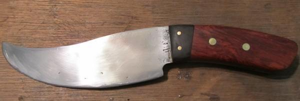
有许多简单的项目适合初学者锻造铁匠尝试，其中许多都是在开始更具挑战性项目之前的良好练习。你甚至可以制作这些物品并出售，用收入购买更多工具来制作更大、更复杂的物品。
除了刀之外，以下是一些适合初学者的锻造项目：
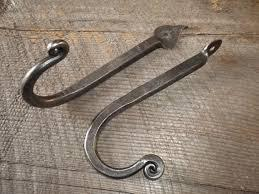
J型挂钩是作为铁匠可以制作的最简单物品之一。你也可以用它们在家里或办公室悬挂各种物品。
要制作J型挂钩，你需要一把钳子、一把凿子、一把锤子、一个铁砧(anvil)、一个锻炉和一根3/8钢条。
将钢条的一端放入锻炉中加热，加热后用锤子打出尖端。要制作尖端，敲打钢条末端同时旋转它。将尖端的锥度延长1.5英寸。
钢条获得锥形末端后，再次加热并通过频繁敲打和旋转来平滑边缘。你会得到更圆润的设计，去除所有明显的棱角。按你想要的方式设计好锥形后，重新加热钢条并创建U形。将锥形尖端向内弯曲形成卷曲末端。
热切钢条到你想要的长度。切割挂钩后，根据需要将其拉直，并将直端锤平以创建安装点。
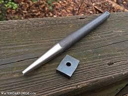
所有铁匠都需要冲子，因为它能在需要时在项目上打孔。你可以根据需要使用任何尺寸的钢条。任何金属棒都适用于这个项目。
你需要的工具有锤子、钳子、铁砧和一个小锻炉。
加热钢条并切割到所需长度。用锤子将末端锥成尖端。尖端的末端应该是平的。通过反复敲打和旋转来圆滑锥形的边缘。
通过打磨然后抛光来完成冲子。你也可以选择不抛光以获得更粗糙的外观。
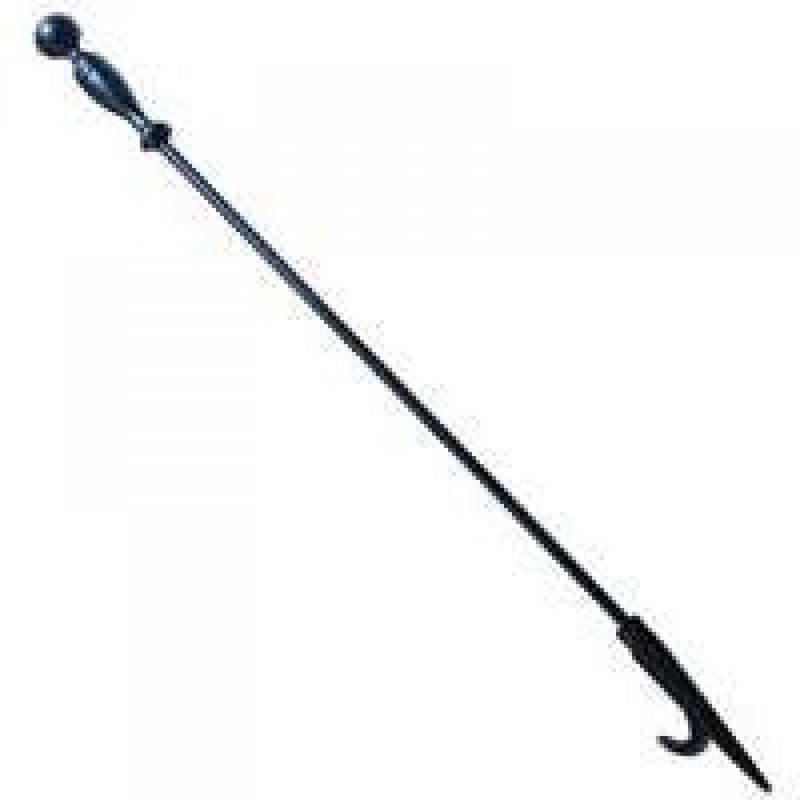
拨火棒是一个简单的铁匠初学者项目，你可以将其作为礼物、出售或在家中用来照料壁炉。
要制作拨火棒，你需要一根长金属条、一个虎钳(vice)、钳子、铁砧和锻炉。
首先将金属条的一端锥化，然后在锥形末端上制作一个环，将其卷向自身。要获得光滑的线圈，重新加热并塑形使其光滑。当钢条在虎钳中时，继续将锥形的这一端绕着钢条扭转。在另一端，制作一个较短的锥形尖端。
这个项目简单且非常适合新手铁匠。你可以制作一个用于销售、作为礼物送人，或供自己使用。这个项目需要一个冲头、一把锤子、一个铁砧和一个锻炉。你可以使用任何金属棒来完成这个项目。
加热并压平金属棒的一端。在上面冲孔并塑造一个大孔，然后通过制作一个唇边来完成，用于钩住并撬开瓶盖。
装饰心形
装饰心形是制作送给爱人或用于销售的绝佳礼物。要制作心形，你需要一把锤子、钳子、一个铁砧、一个锻炉和一根½英寸的方形金属棒。
使用铁砧，从你的金属棒上打造出心形的弧线形状。用锤子将金属棒的两端锥化，以形成心形的外形。将两端向内卷曲，直到它们在中间相遇，形成心形。
心形的形状会根据你的喜好而变化。
树叶钥匙链
树叶形钥匙链对初学者铁匠来说是一个很好的挑战。这个项目比其他更简单的项目更复杂一些。要成功完成项目，你需要一根金属棒、一把锤子、一个铁砧和一个锻炉。
将尖端锥化，然后用锤子将金属棒的末端锤平，形成树叶的形状。将茎部卷曲形成一个闭合的环。
圆头锤
锤子是另一个能挑战初学者的好项目。作为初学者锻造锤子，你需要管理好你的金属，正确加热它，并熟练地将其塑造成你想要的锤子形状。
使用一块3英寸长、2英寸圆的1045钢坯。加热你的钢材，然后用锤子将其打成你想要的锤子大致形状。一旦你的金属呈现出带有斜边的方形，开始在你将要安装手柄的地方冲孔。每锤击几次后旋转你的锤子。
完成锤眼后，是时候塑造锤颊了。由于你不想使刚制作好的锤眼变形，使用冲杆本身来锤击和支撑锤眼，同时将中间部分锤成你最终想要的厚度、形状和纹理。
完成锤颊后，制作锤颈，并打造你想要的任何锤面组合。如果你想要一个简单的圆头锤，在两侧都放置一个锤面，你稍后会修整它们以形成不同程度的圆度。
在过程接近尾声时，你不需要做太多锻造。对圆头锤进行热处理至关重要，因为这个工具将对铁砧和热金属进行无数次的锤击。因此，锤子需要回到特定温度，让其缓慢冷却到室温，这比淬火或退火金属更好。最佳标记时间是在它非常热的时候。锤子冷却后，你可以安装手柄。
餐铃
餐铃是新手铁匠可以制作的最简单的物品之一，三角形餐铃是一个很好的起点。拿一小块薄金属片。加热并将其弯成三角形。再拿另一块薄金属片，锻造出一个小铃舌(clinger)。
钳子
要制作钳子，你需要一块薄金属片、一把锤子、一个锻炉、管钳或锁紧钳、一个铁砧、一根用于螺栓的杆和一个斧头或凿子。
测量并标记你想使用的金属长度。留一些余地，因为拉伸金属的过程会使其变长。加热你需要切割的部分，然后沿着接缝压平你的金属，这将引导你找到边缘的位置。从一端开始压平，然后通过加热并在铁砧上锤击的方式沿着金属向下推进。
加热你想要作为钳口的末端部分。使用锁紧钳，将金属扭转90度。对于第二块金属片，向相反方向扭转。如果你不这样做，最终会得到两块相同的金属片。
现在为钳口制作弧形，确保当你组装两块金属片时它们形成椭圆形。你可以通过放置你的金属来做到这一点,确保平坦的一端平行于铁砧放置。手柄应该垂直于铁砧。在锻炉中加热这一部分，然后进行圆整。
将你的金属从上次位置翻转180度，确保带有扭转钳口向下弯曲的部分朝上。加热手柄中直接位于钳口弯曲部分下方的直线部分并敲打它。敲打直到平放在铁砧上；它将与手柄在同一条线上。两块金属片应该是彼此的镜像。
将两根金属棒叠放在一起，使其呈现完成后的样子。然后标记它们相交的中心点。加热并在上面冲孔，确保你创建的孔与你用作螺栓的杆直径相同，以实现紧配合。在两块金属片上都冲孔。
测试并检查你将使用的螺栓是否适合两块金属片。将整个钳子放在锻炉中螺栓所在的位置并加热。当它变热时，继续锤平螺栓。压平两端以将两块金属片永久固定在一起。在它完全冷却之前不要开始开合钳子；否则，你将倒退几步并重新开始。
你现在拥有了新钳子。
海龟头加热棒(Loggerhead)
海龟头加热棒是古代用来加热饮料的工具。它的工作原理类似于现代微波炉，使用淬火方法，你将一块热金属片放入饮料中来加热它。要制作这个物品，你需要一根4英寸的圆棒。
从金属棒的一端，锻造出长度在2到3英寸之间的颈部。切掉多余的材料，留下足够的金属长度来锻造你喜欢的手柄。最后，用钢丝刷好好清理并涂上食品安全的涂层。
环形开瓶器(Loop Opener)
加热一块金属并使用半面锤击将前1英寸压平。同时，确保将钉头上突出的边缘定向，使尖端处形成的肩部位于开瓶器的对面。这样做会使最终产品更加符合人体工程学。
使用冲孔器在尖端中心打出一个大约5/8英寸的孔，然后使用砧角将环扩大到直径1英寸和1¼英寸。每次锤击后不断移动环的位置使其均匀。确保在多次敲击后翻转金属片，以避免孔只向一个方向倾斜。
当环被均匀加热后，向钉子方向向后敲击以形成开瓶器的椭圆形状。如果形状不对称，可以在砧角上再次打开并重新制作。最后使用球形冲头锻造出用于卡住瓶盖的凸片。
顾名思义，香草切碎器是用于切碎香草的厨房工具；它可以是单手或双手操作。锻造时要格外注意使两个手柄的锥度匹配。不锈钢是这种厨房工具的优质材料，因为它不会生锈。
从16英寸扁钢开始，在2英寸处使用半面锤击技术将一端偏置。锻造出大约5½英寸的锥度。在剩余的钢材上，在边缘锻造出斜面以形成刀刃。
在刀刃的两侧进行加工，注意沿着金属片均匀地向下锻造刀刃，频繁地来回加工而不是在每个点重锤。这样做会使刀刃对称，并从延展的金属中形成切碎器的弧度。
卷曲尖端，然后沿刀刃方向制作手柄。在切碎器顶部的背面制作更大的弧度。您可能需要标记弯曲处以便参考每个手柄并徒手加工每一侧。
最后，使用锉刀或磨床将刀刃打磨到所需的锋利度，并修正刀刃上的任何不对称。用钢丝刷清理并涂上食品级涂层。稍微上油以防止生锈。
您需要16号金属薄板或6英寸×6英寸、8英寸圆钢拉长，或10号铜线。对于蛋勺，在金属板上画一个6英寸的圆并使用冷切割磨床或凿子将其切出。对于长柄勺，制作一个4到5英寸的圆。使用锉刀或磨床清理边缘。
使用圆头锤或球头锤将金属片敲成碗状。长柄勺的碗要比蛋勺的碗更深。从圆钢上以90度角制作环，并从多余部分切下2英寸的一段。确保将这一段略微压平并夹在虎钳中。
使用成型工具隔离出钢条端部的¾英寸，然后将其打圆。将颈部向后锥化3英寸。用横锤敲击端部形成椭圆形，其宽边与手柄轴垂直。继续弯曲椭圆形端部以适应碗的曲线。
对于蛋勺,向延展端逐渐锻造16英寸锥度。对于长柄勺，锻造11英寸锥度。在尖端留出一些金属以支撑碗端。将锥度之外的6英寸压平并在该点切断。用冲孔器和½英寸冲杆在手柄顶部打一个孔。使用砧角清理孔洞。将手柄边缘倒角，形成类似压缩金字塔的外观。
要组装和完成碗和长柄勺，在碗和手柄上钻两个略大于10号线的孔。使用10号铜线作为铆钉。对于蛋勺，弯曲手柄使其在以约30度角握持手柄时与碗保持水平。对于长柄勺，弯曲手柄以确保在以约80度角握持手柄时碗保持水平。
传统锅铲是练习锤击技术的绝佳方式。您需要4英寸×1英寸的钢材。从一端13/4英寸处锻造肩部。在砧的近侧用半面锤击并锻造隆起。从第一个肩部¾英寸处在¼英寸面上收颈。
用横锤沿铲面中心锻造出凹槽，逐渐对称加宽。在完成金属延展之前保持边缘较厚。当您将锅铲与砧角对齐时，锤平锤痕。
将手柄剩余部分拉出31/6英寸×½英寸。从铲面1英寸处收紧手柄。转90度使铲面直立，用半面锤击形成肩部。向上移动11/4英寸并在砧边缘附近施加半面锤击。制作八角形，然后将隔离区域打圆以形成装饰性”圆筒”。
使用横锤在圆筒两侧展开肩部。确保其呈45度角，形成尖角以增强过渡点的强度。
使用半面锤击；从手柄顶部¾英寸处偏置，这就是挂钩。从圆筒向后在手柄背面制作浅凹槽。将偏置部分锻造成尖并向偏置方向制作小卷曲。之后，淬火卷曲部分并用砧角闭合环。在卷曲之前将偏置加热到20至30度以形成圆环。
您可以在此阶段纠正任何偏差。研磨或修剪锅铲面上多余的金属，然后进行冷锤击锅铲边缘。使用锉刀进行精修。
您需要一根细长的金属棒来制作肉串。您还需要一个锻炉、一个砧、一把锤子和一个虎钳。
将金属棒的一端放入锻炉中加热。将末端向内卷曲以形成装饰性端部。继续形成更大的环以完成肉串的手柄。通过将肉串放在虎钳中，转动它以在金属棒上形成均匀的扭曲。
心形碗是周年纪念、婚礼、情人节和其他活动的绝佳礼物。要制作这样的碗，你需要一块金属板、一个型砧(swage block)、一把锤子和一个铁砧。
在你锻造出心形金属后，将它移到型砧上，然后继续锤打以制作出圆形的碗状。你可以选择让它保持粗糙的外观，或者将其抛光。你可以将这些碗制作成任何你想要的尺寸；你还可以压印名字或日期，为每位顾客定制。
抽屉拉手是一种非常简单快速制作的工具。要制作抽屉拉手，你需要一台钻床、一小段金属棒料、钳子、锤子、铁砧和一个锻炉。
加热金属棒的两端，将它们锤平以形成抽屉拉手的底脚。弯曲底脚，使其达到正确的安装角度。
加热抽屉拉手的中间部分，在铁砧角上弯曲它，直到它呈现拱形。创造这个形状没有特定的规则；你可以将其塑造成你喜欢的样式。使用冲头钻孔。
锻造铁匠(Blacksmithing)是一项美妙的爱好。
在本书中，你已经学到：
开始锻造各种工具所需的基本工具；正如你可以想象的，还有其他工具，你会在继续从事这项新手艺时了解到它们。
我们学习了如何创建一个实用的锻造铁匠工作坊，这至关重要，因为你将处理火焰和其他有害燃料，包括设备。在你的工作坊里需要格外小心。不要忽视那些可以挽救你和经常光顾你工作坊的人生命的安全措施。
我们了解了如何锻造基本物品，这是初学者锻造铁匠入门的好方法。
既然你现在已经掌握了所需的所有知识，就要致力于获得尽可能多的经验，并逐步向锻造复杂物品迈进。随着你的技能发展，如果你的手艺开始赚钱，不要感到惊讶：许多人通过锻造不同的东西赚取可观的收入。
祝你在这段旅程中好运，感谢你阅读本书。
附言： 我希望得到你的反馈。如果你对这本书满意，请在亚马逊上留下评论。
请通过访问以下页面在亚马逊上为本书留下评论：